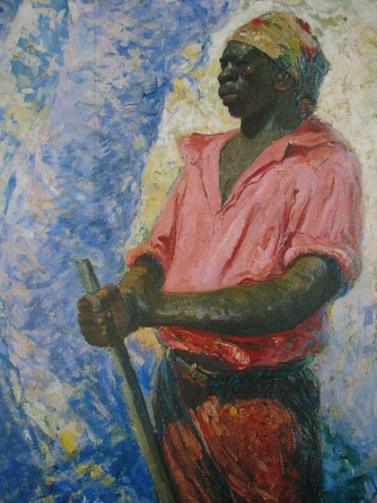

Zumbi dos Palmares
Zumbi virou o símbolo da resistência negra no Brasil. A data que a gente celebra é o dia em que ele morreu.
Segundo a tradição, nasceu livre em Palmares. Ainda criança foi capturado e entregue a um padre, que lhe deu o nome de Francisco e o ensinou a ler e a falar português e latim. Aos 15 anos, fugiu e voltou pro quilombo. Os historiadores discutem detalhes dessa história, mas o essencial é conhecido: ele cresceu entre dois mundos e escolheu o lado da liberdade.
Palmares não era uma aldeia. Era um conjunto de comunidades na Serra da Barriga que resistiu por quase um século, ao longo dos anos 1600. As estimativas falam em milhares de pessoas, até 20 mil: gente que fugiu da escravidão e também indígenas e pobres. Plantavam, criavam, trabalhavam o ferro, trocavam produtos e tinham organização própria. Era a prova viva de que um povo podia viver sem senhor.
- 1678O governo de Pernambuco propõe um acordo de paz a Ganga Zumba, líder de Palmares. Quem tinha fugido de engenhos voltaria ao cativeiro. Zumbi recusa o acordo e assume a liderança.
- 1694Palmares cai depois de anos de cerco por tropas comandadas por Domingos Jorge Velho.
- 20 de novembro de 1695Zumbi é morto numa emboscada, depois de ser delatado. Sua cabeça é exposta em praça pública, no Recife, pra mostrar que ele não era imortal.
- 1996Zumbi é inscrito no Livro dos Heróis e Heroínas da Pátria.
Zumbi mostra que a história negra não começa na escravidão e não é só dor: é organização, estratégia e coragem. E mostra que a memória é disputada. A cabeça foi exposta pra que o povo parasse de acreditar na liberdade. Mais de 300 anos depois, a gente ainda diz o nome dele.